Matar Kachori / Peas Kachori

Last tuesday 'he' gave me a call from office at 5:00 pm and requested me to make some 'chatpata' snacks which will go very well with tea. So, I had exactly 1 hour in my hand to make something. Don't know why, but suddenly a thought of spending evening time in India, came in my mind. My grandpa used to bring different kinds of snacks like 'samosa', 'nimki', 'vegetable chop', 'kachori', 'beguni' etc and with all our family members we enjoyed those with a cup of tea and some puffed rice (muri). Those are kind of evenings, which I will miss rest of my life. After so many thoughts, I planned to make 'matar kachori' / peas kachori because I had some frozen peas in my kitchen. The recipe is very easy, simple and tasty. All of my 'kachori'-s came out perfectly and his expression was like 👌👌👌. Try this in your kitchen and enjoy a lovely evening with your loved ones.

Ingredients
- 2 cups of peas.
- 1 cup of flour (maida).
- 3-4 tablespoons of oil / ghee as 'moyan'.
- Salt and sugar.
- 1 Teaspoon crushed coriander seeds.
- 1 Teaspoon cumin seeds.
- 1 Teaspoon each (gram flour (besan), garam masala powder, red chilli powder, amchur (dry mango) powder).
- Water.
- White oil for deep fry.

Steps
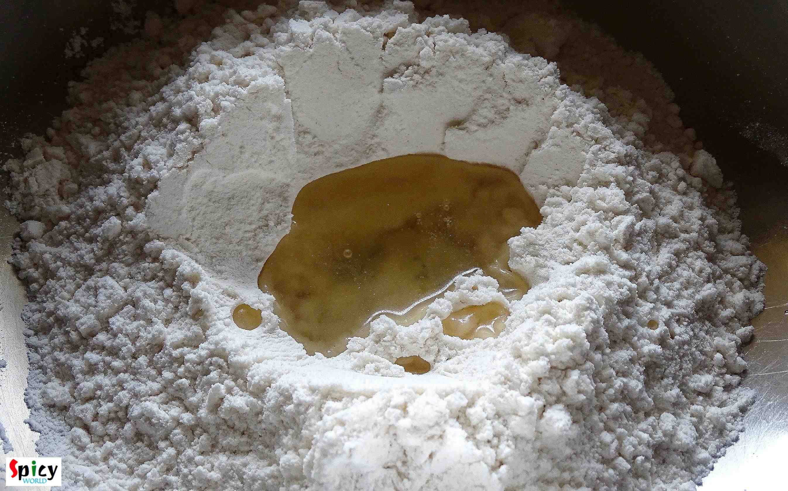
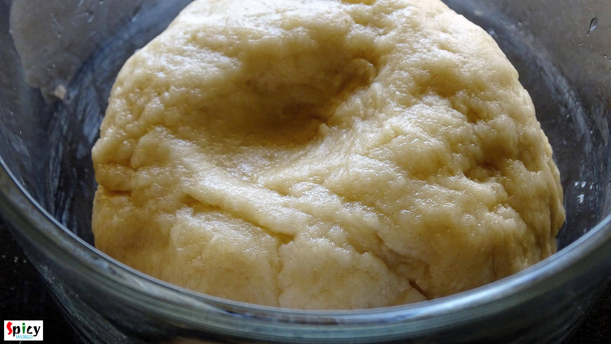
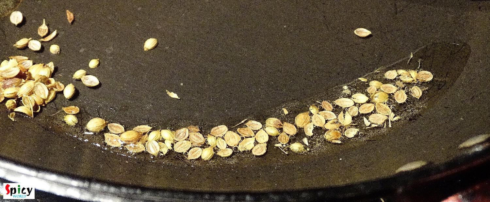
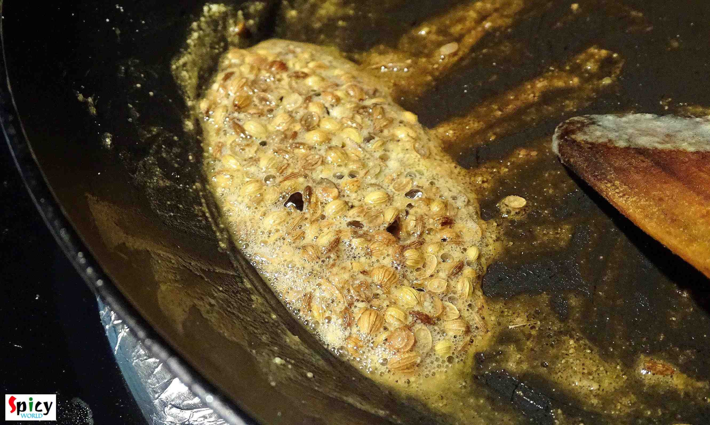
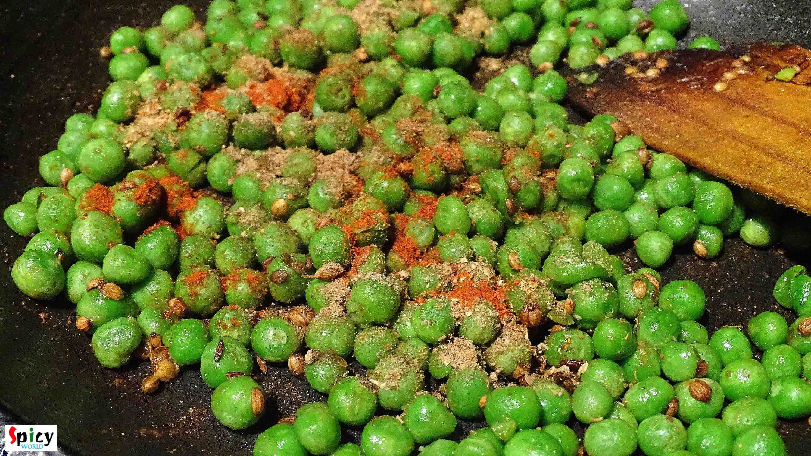
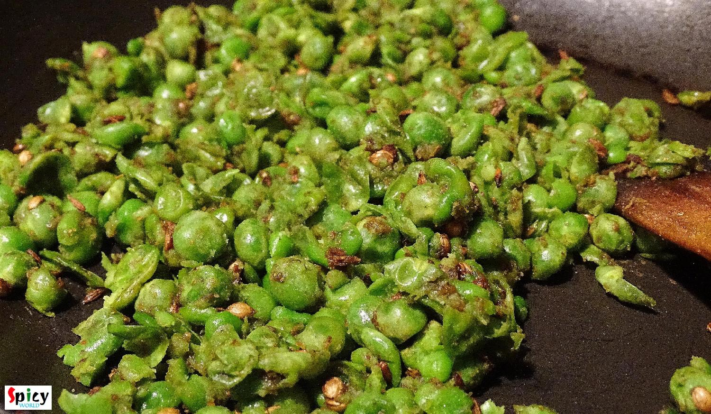
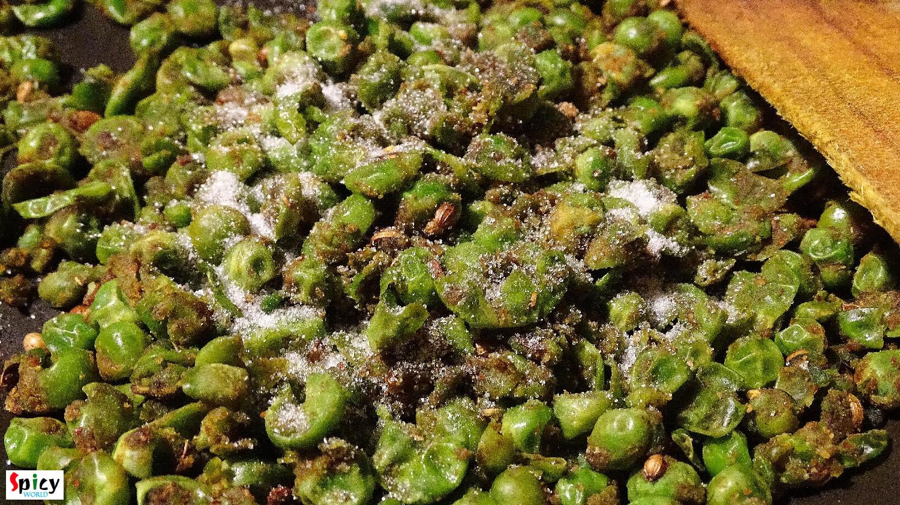
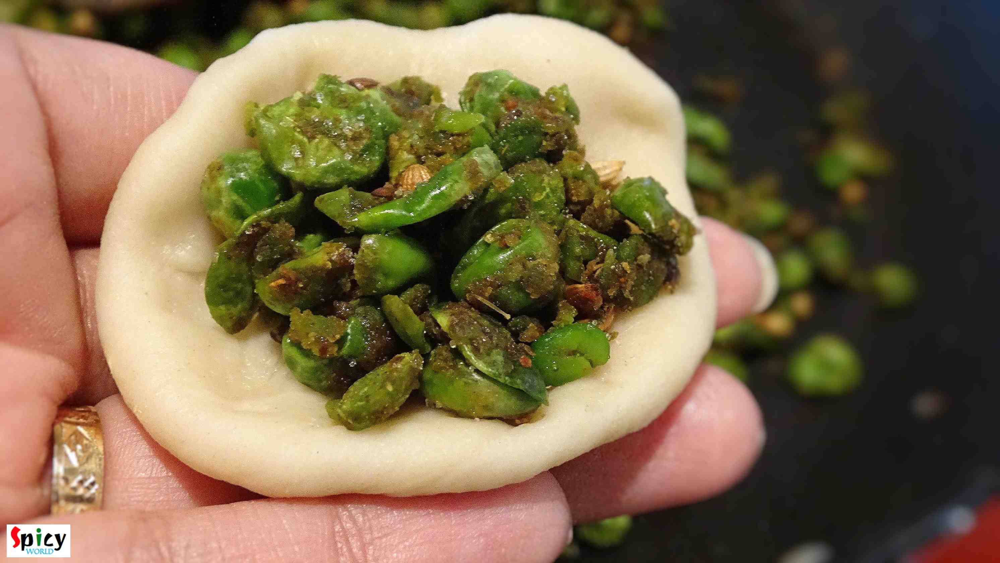
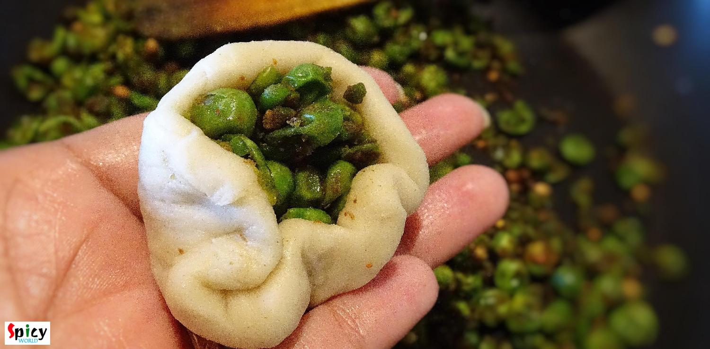
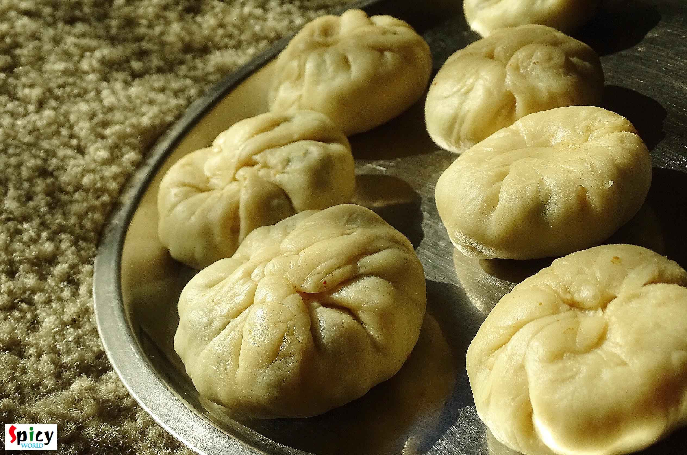
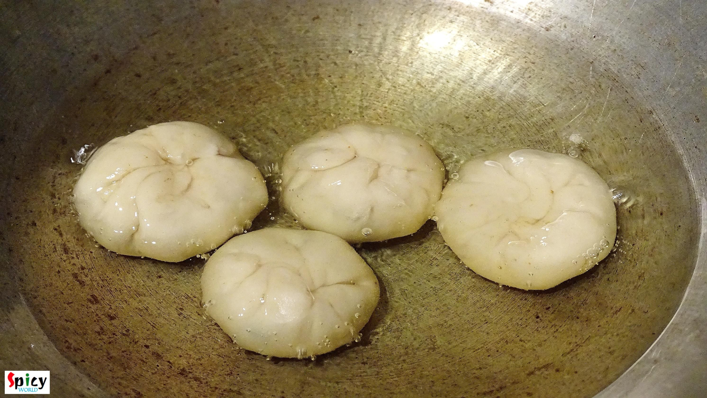
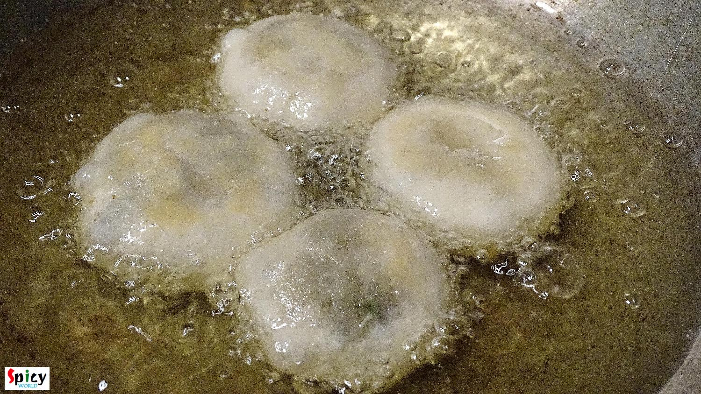
- Enjoy them hot with a cup of tea ...